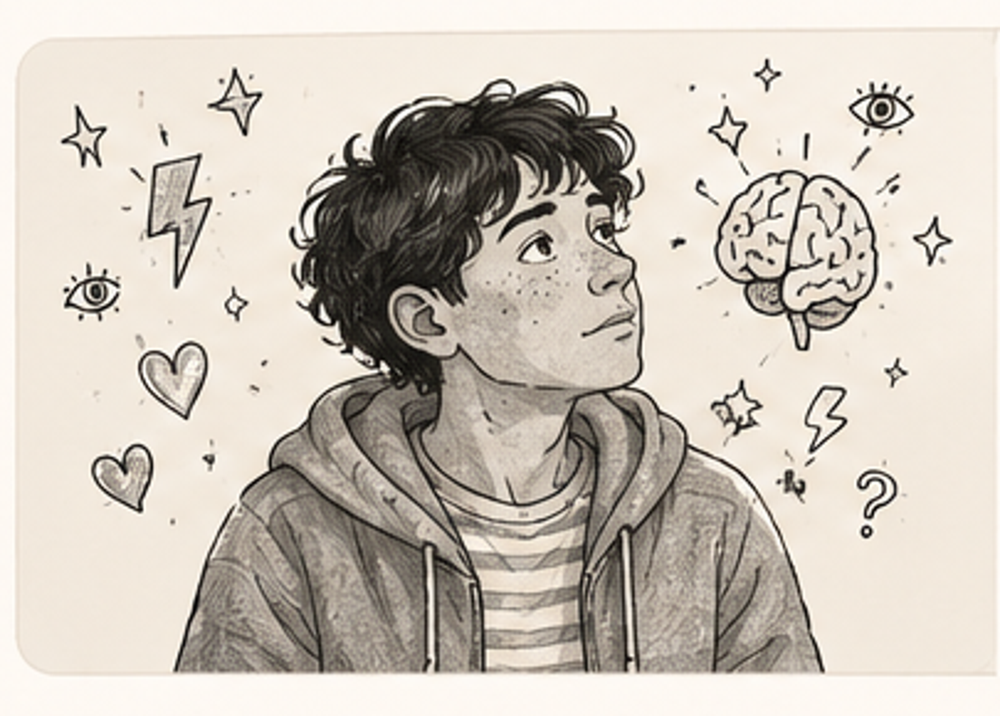

Neuroatypies
TDAH, puberté et sexualité : « C'est normal. »
Une psychoéducation indispensable pour comprendre les bouleversements de la puberté, du désir et des relations.
Lire l’article →Les Carnets
Des articles sur le TDAH, les autres formes de neuroatypie, la compréhension de soi et la psychoéducation.

Une psychoéducation indispensable pour comprendre les bouleversements de la puberté, du désir et des relations.
Lire l’article →